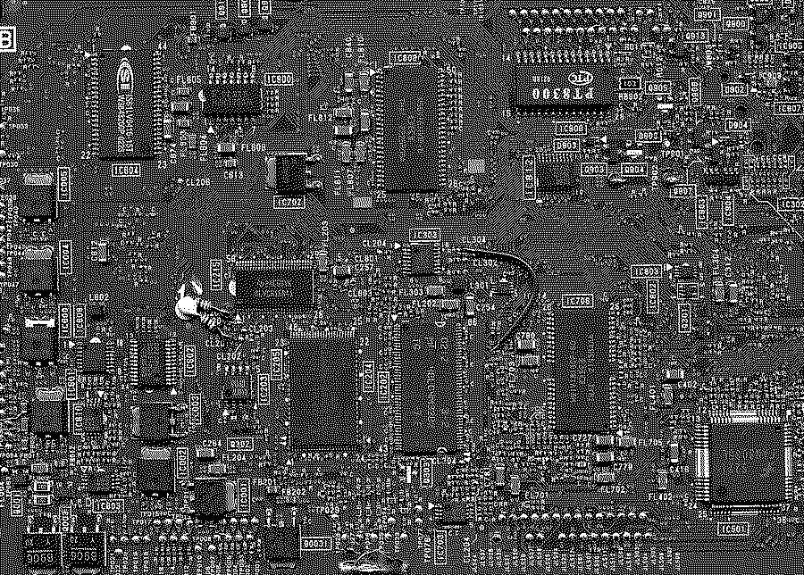

This was going to be an art project where I would generate PCBs and render them with a dithered 1 bit aesthetic. But I only got as far as implementing Floyd-Steinberg dithering before I was distracted by other things.
Done in high school